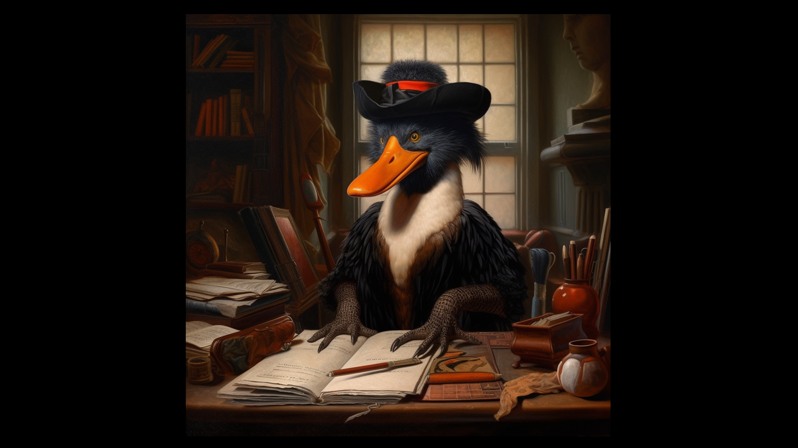

Duck Amuck: The Dawn of Meta-Cartooning and its Roots in Animation History

In the world of animation, few creations have been as impactful and timeless as the Warner Brothers' classic short, "Duck Amuck" (1953). Born in the midst of the Golden Age of Animation, this unique creation has since been hailed as a seminal piece in the evolution of animation, marking the advent of what we now refer to as 'meta-cartooning.' Let's delve into the fascinating world of "Duck Amuck" and explore its roots in the earliest examples of animation.
"Duck Amuck" was not merely a cartoon. It was a witty, layered creation that cleverly broke the fourth wall, presenting a self-aware narrative where Daffy Duck finds himself at the mercy of a mischievous animator. But to truly appreciate the genius of "Duck Amuck," we need to step back in time and examine the early pioneers of animation that laid the groundwork for this innovative piece.
One of the earliest known animations is "Fantasmagorie" (1908) by Émile Cohl. Known as the 'father of the animated cartoon,' Cohl created a surreal and playful piece using what was then a groundbreaking technique of hand-drawn animation. This early work laid the foundation for the concept of animated characters interacting with their creator, a theme that would later be central to "Duck Amuck."
Another influential early animation was Winsor McCay's "Gertie the Dinosaur" (1914). This interactive cartoon showed McCay 'commanding' Gertie, a dinosaur, to perform various tricks. The dynamic between creator and creation in "Gertie the Dinosaur" would later be echoed in "Duck Amuck," with the animator exerting control over Daffy.
Yet, perhaps the most direct precursor to "Duck Amuck" was the "Out of the Inkwell" series (1918-1929) by the Fleischer Brothers. This innovative series featured Koko the Clown, who would often interact with his animator, jump off the drawing board, and cause mischief in the real world. The interaction between the animated character and the artist set a precedent for the self-referential humor and fourth-wall-breaking antics later seen in "Duck Amuck."
Lastly, the influence of Walt Disney's "Alice Comedies" (1923-1927) can't be overlooked. This series combined live-action and animation, with Alice navigating a cartoon world, providing a playful blend of reality and fiction that is mirrored in "Duck Amuck."
When "Duck Amuck" was released in 1953, it marked a transformative moment in animation. Directed by Chuck Jones, the short presented Daffy Duck in a constant state of flux, manipulated by an unseen animator who continually changes Daffy's surroundings, appearance, and even his voice. It was an unusual, self-referential piece that challenged the viewer's expectations and traditional narrative structures.
"Duck Amuck" transcended the bounds of typical cartoons, revealing a self-awareness that was revolutionary at the time. The animator's identity is finally revealed at the end as none other than Bugs Bunny, adding another layer of meta-humor and leaving the audience with the now-iconic line, "Ain't I a stinker?"
The legacy of "Duck Amuck" can't be overstated. It gave birth to meta-cartooning, a genre that combines traditional animation with self-referential humor and fourth-wall-breaking elements. This stylistic innovation has inspired countless animations since, including popular contemporary shows like "The Simpsons," "Rick and Morty," and "Adventure Time."
By placing Daffy Duck in the capricious hands of an unseen animator, "Duck Amuck" challenged traditional animation rules and turned them on their head. This gave rise to a whole new way of storytelling that resonated with audiences and continues to inspire creators today.
"Duck Amuck" paid homage to its predecessors while pushing boundaries of its own. The core concept of an animator interacting with his creation was borrowed from earlier animations like "Out of the Inkwell" and "Gertie the Dinosaur." Yet, "Duck Amuck" took these concepts to new heights, providing a commentary on the relationship between a character and its animator, and effectively crafting a new genre in the process.
It's not just the animator-character dynamic that makes "Duck Amuck" a revolutionary piece of meta-cartooning. The short also introduced a heightened sense of self-awareness to the world of animation. Daffy Duck isn't just aware that he's being controlled by an animator; he actively communicates with the animator and expresses his frustration at the endless changes being made. This marked one of the first instances of a cartoon character acknowledging its fictional existence, a trait that would become a cornerstone of meta-cartooning.
The importance of "Duck Amuck" in animation history was recognized by the Library of Congress in 1999 when it was selected for preservation in the United States National Film Registry for being "culturally, historically, or aesthetically significant." The power of its meta-cartooning has not only stood the test of time but has become a defining element of contemporary animation.
"Duck Amuck" took the raw materials of animation provided by pioneering shorts like "Fantasmagorie," "Gertie the Dinosaur," "Out of the Inkwell," and "Alice Comedies" and molded them into something entirely new and groundbreaking. By defying the traditional laws of animation and embracing self-referential humor, it birthed the genre of meta-cartooning and forever changed the landscape of animated storytelling.
In conclusion, "Duck Amuck" isn't just an entertaining short; it's a pivotal piece of animation history. It serves as a testament to the timeless appeal of meta-cartooning, a genre that continues to evolve and captivate audiences worldwide. From its origins in early 20th-century animations to its profound influence on modern-day cartoons, the legacy of "Duck Amuck" lives on, reminding us of the boundless potential of animation and the enduring power of creative storytelling.